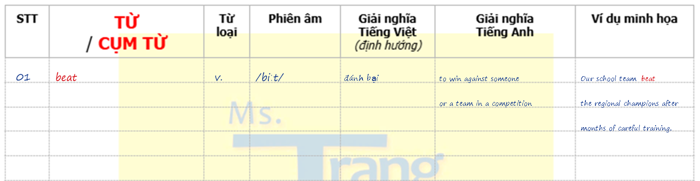

Chỉ chọn những từ của Unit có cách viết dễ làm em đọc nhầm. Nghe mẫu và đối chiếu trực tiếp với IPA.
Cách dùng: học lần lượt mục : nghe phát âm chuẩn → đọc theo IPA → hiểu nghĩa và ví dụ → chép đủ 7 cột vào sổ.
ˈ trọng âm chính
ˌ trọng âm phụ
ə âm schwa
sb: ai đó · st: điều gì đó
~ gần nghĩa / chỉ khác nhẹ
# khác nghĩa rõ
>< trái nghĩa
· cùng họ từ / dạng liên quan
🔊 phát âm chuẩn
02 · Pronunciation sheet
Lưu ý phát âm của Unit này
Chú ý âm câm, âm cuối và vị trí trọng âm được ghi cụ thể ở từng mục bên dưới.
Khi có dấu ‿, nối phụ âm cuối của từ trước với nguyên âm đầu của từ sau; không ngắt thành hai từ rời.
03 · Vocabulary notebook
Chép đúng mẫu sổ 7 cột
Dùng mẫu dưới đây làm chuẩn trình bày. Tiêu đề cột là phần in sẵn; nội dung học sinh tự điền viết ngay sát dòng kẻ xám.

- Từ/cụm từ viết màu đỏ; các cột còn lại viết rõ ràng.
- Giữ nguyên số thứ tự như trên web để giáo viên dễ kiểm tra.
- Ghi đủ từ loại, IPA, nghĩa Việt, nghĩa Anh và ví dụ.
- Nếu ví dụ dài, xuống dòng tiếp theo nhưng vẫn bám sát dòng kẻ.
04 · Record & submit
Chụp sổ, quay trả từ và gửi bài
Video mẫu
Xem cách che sổ và trả từ
Quan sát cách đặt sổ trong khung hình, che phần nghĩa tiếng Việt và đọc lần lượt từng mục.
Yêu cầu nộp bài
- Chụp rõ toàn bộ các trang sổ của ; có thể tải lên 1–5 ảnh.
- Dùng giấy che kín cột nghĩa tiếng Việt. Khi quay, phải để phần đã che trong khung hình để thể hiện em đã che chữ.
- Nhìn từ/cụm từ tiếng Anh, đọc nghĩa tiếng Việt rồi phát âm từ/cụm từ thật chuẩn, theo đúng thứ tự trên web.
- Quay liên tục, chất lượng thường và dung lượng thấp; không cần HD. Mỗi video được phép tối đa 1 GB.
Mã bài đã được điền sẵn. Tuyệt đối không thay đổi mã bài. Học sinh chỉ cần điền họ tên, lớp và tải tệp.